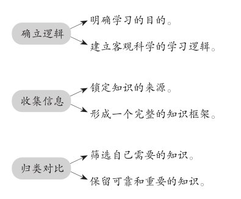
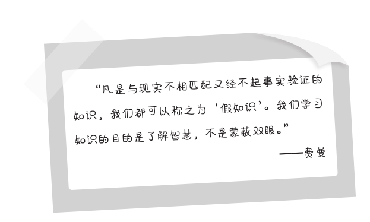

第七章
归类和对比知识的来源
在《发现的乐趣》一书中，费曼接受采访谈到学习时认为，如果一个人不能有意愿和彻底地、深入地理解自己的学习对象，不知道自己究竟在学习什么，对于知识的印象十分模糊空洞，在学习上付出再多的努力也不可能有好的收获。
换言之，学习思维的转换能为我们带来不同的学习效果，首要原则是确立一个目标后愿意并有能力理解它，将知识打散，然后进行聪明而简洁的解构，从中找到自己的方向，建立自己的逻辑。换句话说，假如你不能将知识系统化，再用一个自己能理解的框架把知识组合起来，就说明你理解得还不够透彻，学习的效果恐怕也是值得怀疑的。
毫无疑问，正确的学习思维和方法确实很神奇。费曼学习法首先讲的是“学习的方法论”，其次才是教你学习的具体技能。在学习这条道理上，你可以不自信，甚至什么都不知道，但不能缺少一颗踏踏实实的心。必须从最简单和必要的步骤做起，细微地观察和理解知识，到该收获的时候才能得到回报。
将知识有逻辑地系统化
现实中不乏记忆力超强的人，但能够在熟练记忆的同时将知识以一种合理的逻辑系统化的人却少之又少。逻辑就是你理解知识的出发点、角度、立场和思维方式；系统化则是你是否可以将这些知识纳入一个宏观的知识体系，互相印证和科学比对，对既有的知识体系形成补充。
如果出发点是为了应付考试，你的学习是纯功利性的输入；
如果接触一类知识的目的是为了强化某种固有立场，你的学习是有倾向性的输入；
如果是内卷和排他的思维方式，你的学习是偏执性的输入。
以上三个问题会使你在理解一门知识时缺乏合理的逻辑，就像系统出现了BUG、混乱和无序；对待知识的不同来源，也不具备足够敏锐的分辨力。
比如学习一门医学知识，单纯以应付考试为目的，你不会在乎知识的对错——过时的医学理论和临床数据。如果对你的学习没有影响，你就只关心它在考卷上的标准答案，然后机械和精准地记住它；为了强化自己的固有立场，你就会有意忽视那些对你的立场不利的信息，有选择地了解、掌握对自己有利的内容；思维方式是内卷和排他性的，你就会利用自己有限的知识构建一个逻辑闭环，进行循环论证，忽视其他相反的观点。这不仅使你无法真正理解自己的学习对象，反而学得越多，观点就越偏狭，背离了学习的初衷。
有一个成语叫作坐井观天。坐在井里，你可以很自信，认为头顶的天空是全部的世界。没关系，人有固执和偏激的权利。但到最后，许多看似努力的学习最终产出的却是坐井观天的结果，这是很可惜的，因为并非是学习者所希望达到的目的。
有逻辑地系统化，意味着我们在理解知识的第一阶段要做对三件事：
第一，明白自己学习是为了什么。
没有目的的学习是可怜的，但目的错误的学习却是可悲的。正确的目的是非功利、非倾向性和非偏执性的，要有一个单纯的愿景——“我就是想掌握这些知识，了解它们，然后产生自己的理解，学习时并不想怎么用这些知识为自己创造利益”。虽然后者非常重要，但我从不建议读者在学习时对其倾注太多精力。尽管学到的知识总要为己所用，但太功利的态度和过于明显的偏执很可能让学习事倍功半。
第二，拥有一个足够宽阔的视野。
一个很有趣的事实是，随着年龄的增长，我们的学习视野往往在变小。具体体现在，成人在学习上“问问题”的能力有时远不如小孩。看到一本书，小孩会问：“作者为什么写这本书？作者想告诉我们什么？这本书为什么定价100元？封面有何特殊意义？他是怎么总结出这些知识的？”大人呢？可能仅有寥寥几句：“这本书我读了有什么用？还有比它便宜一点的书吗？”听起来老气横秋，没有活力。这体现了一个人视野的局限性，它受到阅历、生活工作的实际需要和世界观的多重影响。所以我经常讲：人要尽量保持童真，因为童真的心态能扩大你的视野，让你愿意并且能够在这个世界中看到更多的“可能性”。
第三，建立最可能客观科学的逻辑。
一个客观科学的逻辑能帮助我们成功地将知识系统化，并且保证这种系统化是有益的，可以把知识有序地安放到位，赋予它们应有的价值。
有一名学生曾就这个话题和我讨论，他不太清楚如何简单明了地理解“系统化”。我问他：“假如你要建造一栋房子，要干的第一件事是什么？”他说：“挖地基，运材料？”我说：“不，是画一张图纸。”他恍然大悟。系统化就是为我们准备一张学习的图纸，把材料安放到它该去的地方，让不同来源的知识各归其位，利于我们对比和筛选。如果没有这个可靠的系统，缺乏客观科学的逻辑，你对知识和信息就不具备强有力的分辨能力，在学习时便容易良莠不分，或者贪多嚼不烂而消化不良。
筛选和留下最可靠的知识
我们知道，现在越来越多的人患有强烈的“知识焦虑”，随着人工智能的快速发展，现代社会实质上进入了一种“信息之海”，你看到、听到和感知到的所有信息都不来自人，而是互联网技术。学习不再是“人”自己的事情，是人和机器的竞赛。人们开始担心未来会不会被人工智能全面替代。怎么在这场竞赛中保住自己的优势？如何从信息之海中筛选出对自己有用的信息？这让人备感无力。
但是，学习最重要的并不是找到那些价值千金的知识，而是通过对知识的筛选与吸收建立起自己的思维框架。
筛选和提取知识——比如一本20万字的书，它提供的信息和知识点是海量的，你不可能用同一个标准吸收它全部的内容，只能有针对性地筛选和提取书中的某一些知识点，或者制定一个框架，根据目录、需求等标识性的东西到书中寻找相应的知识点，把它们拿出来，再延伸到自己对于这些知识点的理解，产生一个关于此书的“缩略版”。
筛选知识的方法论——也是搜集信息的方法论，首先你要清晰地知道自己的短板是什么，要重点学习哪方面的内容，这叫锁定方向；其次你要快速准确地把相关内容找出来。我推荐读者在学习之前先列一张清单，写上具体的需求——这本书有哪些知识是我最需要的？我急需弥补的知识点是什么？然后照方抓药，把对应的内容标注出来。在这个阶段，你对这些知识不需要深入了解，只需将它们筛选出来即可。
搜集和保留可靠的知识——请注意，即便一本公认非常权威的书，它的内容也并不是全都可靠的，至少对我们个人的需求而言，书中的有些证据和观点未必就符合我们的实际情况。所以在筛选时一个基本的逻辑是：我要找出那些与我的实际需求相匹配的知识。在任何资料和信息的整理中，这都是要坚持的原则。如果你学到的是不可靠的知识，付出越多，成效便越差。像“书呆子”“饱读诗书的废人”等就是在形容那些学习了很多毫无用处的知识的人。
有时候，我突然想放下工作，了解和背诵一首好的诗歌，缓解工作的压力。我也想找一本最新的词典，从中学到几个新的、有意思的词语，为下周的工作做好准备。这些念头是一瞬间的，是短暂的学习的冲动，但它意义深远。因为这些学习占据了你大部分的碎片时间，影响你的整体学习的效率。
如果我能将这些学习的小计划实现好，在碎片时间里做好基本的信息收集和对比分类的工作，就能为我后面的工作解决很多重大的问题。比如，找一些好的诗歌，能让我有好的心情，恢复精力；新的词语能激发我在工作上的创造力，提高未来在学习和工作中的水平。这是学习系统中一个至关重要的环节。
总结——筛选知识的标准和流程：

在这三个步骤中，除了建立学习逻辑和形成知识框架外（学习的目的性和系统性），对知识的来源进行归类比对也非常重要，甚至影响我们学习的最终效果。假如你不能分辨出哪些知识是可靠的，哪些知识经不起验证，很可能到最后才发现前功尽弃。
分辨“假知识”
你知道吗，我们在自己的一生中学到的90%都是假知识，其中很多假知识还被人深信不疑。比如，你认为“近视矫正手术”可以治愈近视吗？十有八九的人回复我他认为可以，态度十分肯定。这是一个错误的医学常识，是很典型的假知识，因为正确的答案是：不能。它只能控制近视，让症状不会更严重，却不能把近视这个问题消除掉。
在这方面，名人也会犯错。《罗辑思维》的主持人罗振宇曾说，他选书的一个方法先看作者是否值得信赖，然后买来他全部的书。潜台词是，相信一个作者，就可以相信他教授的所有知识。这个观点是非常有问题的，因为很多权威给我们的知识中也有水分，而且占比还不小。

“假知识”是如何欺骗大脑从而被我们接受的？根源是大脑学习知识的原理。把知识看作跟其他物品可以很好地理解这个过程，外界的环境和一样东西要被大脑熟悉和接受，就必须经过我们大脑内的意志的转换——我喜欢和需要这个东西。唤醒大脑的意志，是学习和理解一样东西的必经途径。
比如，“床”对人很重要，是睡觉的地方，大脑喜欢它。“衣服”“汽车”“房子”和“酒精”等同样如此。从本质上看，大脑接受它们是某种意志在起作用。人的所有的行为都是靠这些意志的共识运转。没有意志，大脑对任何事都不会感兴趣。我们形容一个人“心如死水”，就是说他从意志层面把自己与外界隔离了。这时候，不管世界发生什么事情，他的内心都波澜不惊，自然也谈不上学习的动力。
相对而言，知识是不变的，变化的是你的意志。大部分的“假知识”都具有刺激意志的特点，为了让人乐于接受，它们被贴上了“强意志”的标签。甫一接触，如同打了一针兴奋剂，瞬间便让你激情澎湃，好像终于发现了世间的真理。可这种短暂的快感只是由于强意志的带动冲击了你的思维，却改变不了你的行为。但它对你灌输了一种错误的认知，这种认知很难消除。
这就是为什么许多创业失败的人愿意花钱去听一些“专家”和“成功人士”的讲座，觉得自己学到了很好的创业知识，却仍然继续失败的原因。这些知识被传播到各个角落，你随便百度就能找到几百页，但你学习它们依旧做不好生意，管理不好公司。这些知识从理论上看也许是对的，可对于实践而言是不折不扣的“假知识”。它们有着吗啡的特点，使人上瘾，我们在学习时必须躲开。
屏蔽来源不确定的知识。对知识来源的判断尤其重要，它们来自图书馆，教科书？还是公众号、论坛或道听途说？对于来源不确定的知识，要坚决屏蔽；对于来源不够专业和权威的知识，则要以审视的眼光对待它们；对于专业和权威的来源，我们也要学会独立地思考和谨慎地采纳。
小心对待差异化的知识。知识的“差异化”是指非重复、有分歧甚至互相冲突的内容，比如，经济学家A说：“随着美国不断退群，全球化已至末路，未来是区域经济的时代。”经济学家B的观点是：“恰恰相反，一个新的全球化时代正式开启了，未来将是新规则、新形态的全球化。”两种看法尖锐对立，但又同是这方面的专家，都提供了严谨的论证。哪种观点是我们该采信的呢？对此要有务实的态度，结合自己的理解学习他们的观点。
用对比的方式挑选和分辨知识。对比知识的来源，目的是删除重复和不可靠的信息，增加获取新知识的可信渠道，保证自己所获得知识的质量。通过归类对比，我们能把那些真正值得学习的知识找出来，将它们放入自己的学习系统。这就像做饭，你从超市买了菜回来，第一步是做什么？是摘菜和洗菜，摘掉那些坏叶子，洗掉泥土。这个过程在任何形式的学习中都必不可少。
曾有人问我，如何才能把知识转化成自己的能力？去参加各种讲座，听课，读书，到知识共享网站“狼吞虎咽”加大阅读量？显然不行！我的建议是，你要先确立两到三个可靠的知识来源——老师、专业网站或图书馆，再把从这些来源得到的知识互相印证对比，找出对你重要的、不同领域的知识，再进行深度的学习。
在学习中，请你忘掉过去累积的所有的技能。因为过去的经验在学习时会起到“强意志”的作用，影响大脑的判断和选择。经验对学习来说并非指路明灯，它回归到本质只是一种具有惯性的行为模式而已。如果你愿意相信经验，经验就代表知识；如果你不认可它，它就是学习的阻力。
你是否想过自己过去学到的知识都是怎么来的？没错，我们所有的知识都来源于“别人的想法”。既然是从别人那里听来、学来的东西，你就必须拥有一种警惕和审视的态度——把“假知识”辨别出来，再踢出你的学习系统，不要在上面浪费一丁点精力。否则，你可能成为“假知识”继续传播的一个无意识的帮凶。